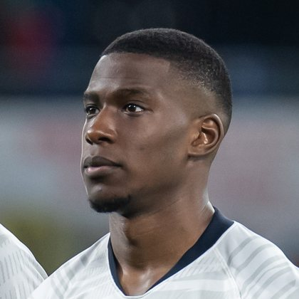

PITCHKEEP
Premier League ranks
Player File · DEF SUN · Premier #40

Nordi Mukiele
DEF · Sunderland · age 28 · £5.5m
2025/26 Premier League
| Year | Starts | Min | G | A | xG | xA | CS | GC | Bonus | YC | Sleeper | FPL |
|---|---|---|---|---|---|---|---|---|---|---|---|---|
| 2025/26 | 32 | 2784 | 3 | 5 | 1.62 | 2.65 | 9 | 40 | 11 | 5 | 174.6 | 151 |
Plus
- Premier #40. Inside the first 50 of the 400-deep hybrid.
- 174.6 Sleeper BPL 2025 points (Pitch #43).
Minus
- Board spread 19-220 (Premier League Scout Club Picks to FPL Price Board).
PitchKeep Take · The Premier
Nordi Mukiele is a defender for Sunderland, age 28, £5.5m. The Premier ranks him 40th overall by splitting Sleeper BPL 2025 (#43, 174.6 points) with the consensus of 3 other boards (41.33). Production and the industry almost agree, which is rarer than it looks on a 24-source mix. When both sides land in the same band, The Premier stops arguing and prints the number.
The 2025/26 Premier League line is 32 starts and 2784 minutes, 3 goals and 5 assists, 9 clean sheets, 40 goals against, 69 tackles and 204 CBI. Official FPL scored it at 151 points (4.7 per match) with 11 bonus. Sleeper's table turned the same counting stats into 174.6. Defenders get 10 a goal, 7 an assist, 6 a clean sheet, and −2 a goal against. CBI at 0.4 and tackles at 1 are how a centre-back cracks the overall 50.
Underlying: 1.62 xG, 2.65 xA, 4.27 xGI and 2.4 above expected assists. The defensive events are the floor: 69 tackles, 204 clearances/blocks/interceptions, 9 shutouts. Sleeper is built to notice that. ICT and xGI boards are not, which is why a centre-back's spread on this board is usually ugly and still informative. The friendliest board is Premier League Scout Club Picks at 19; the coldest is FPL Price Board at 220.
Market: £5.5m, 10 boards on the file. That is leftover money for a Premier-ranked name. If the minutes hold, this board already voted. FPL's own EP-next is 2.5. ICT 132.9.
Instruction: he is a starter in deep Sleeper and a squad/rotation piece in 10-team FPL. Pay Premier #40 money, not a leftover 2024 reputation, not waiver dust. Nearby on The Premier: Pascal Groß, Igor Jesus, Martin Ødegaard. Versus The Pitch (Sleeper-only #43), the hybrid moves him up to #40. That move is the third list doing its job.
He is 28, which on this board is neither a dart nor a warning label. Prime-age defenders get ranked on what they just did and whether Sunderland still gives them the ball. 2784 minutes says yes. The 2026/27 FPL price (£5.5m) is the app's guess at whether that continues. The Premier is the blend of that guess and the box score.
Full-backs and centre-backs separate on this board by attacking events. 3 goals and 5 assists are how a defender outruns his GA column. Without those, you are betting 9 clean sheets and the CBI stream (204) against 40 goals against at −2 a piece. Sunderland's 2026/27 defensive shape is therefore half of this player's rank. The other half already happened, across 32 starts.
How to use the file: The Pitch is the Sleeper-only 400 (he is #43 there). The Premier is the 50/50 with every other board we track. Attack, Midfield, Defence, and Keepers re-rank the same Sleeper table by position. BK Value on this page follows The Premier when you are on the hybrid calculator and The Pitch when you are on the Sleeper calculator. Same curve either way - 12,000 at 1.01. Unranked sources are skipped, never treated as 999, which is why a player missing from Yahoo's XI is not secretly ranked 400th.
Sleeper vs FPL
Same 2025/26 line, two scoring tables
Board graph
Spread 19-220 · 10 sources
Tape · 2025/26 Premier League
Nordi Mukiele Goal | Wolves vs Sunderland | Premier League 2025/26
Every Board
Spread 19-220 · 10 sources
| Source | Rank |
|---|---|
| Premier League Scout Club Picks | 19 |
| FPL 2025/26 Points | 28 |
| Sleeper BPL 2025 | 43 |
| RotoWire Fantrax / Sleeper 400 | 51 |
| RotoWire FPL 400 | 54 |
| FPL EP Next | 70 |
| FPL ICT Index | 72 |
| FPL xGI | 120 |
| FPL Ownership | 131 |
| FPL Price Board | 220 |
PK News
All players · The Premier · The Pitch · PK News · Calculator